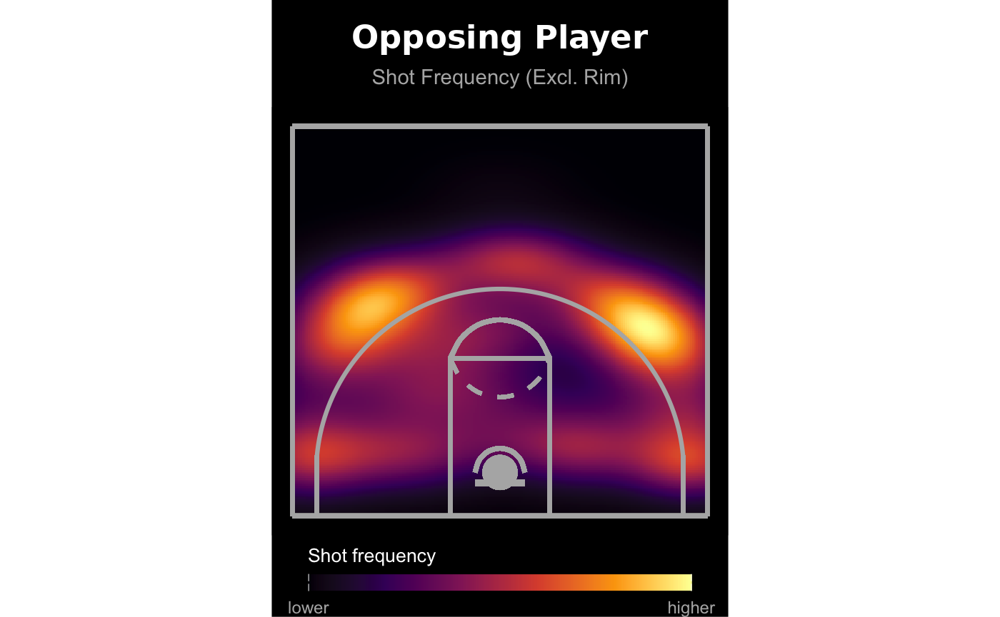
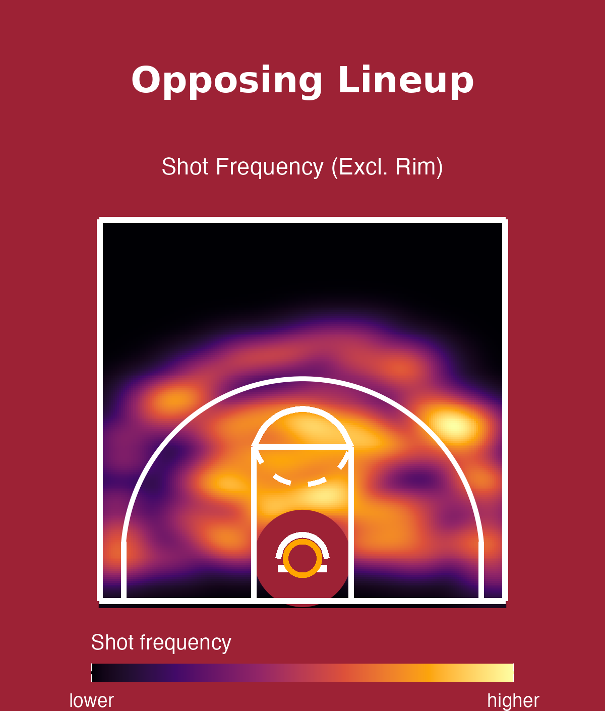
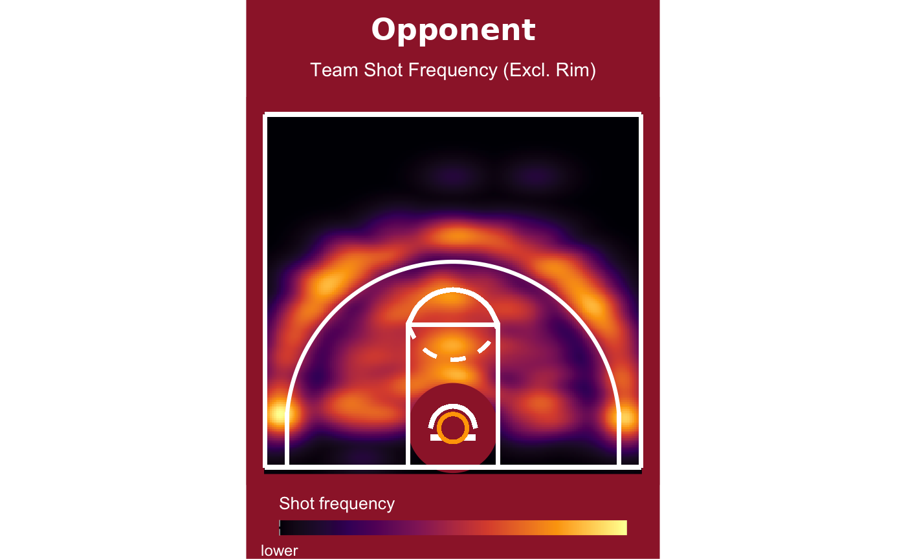
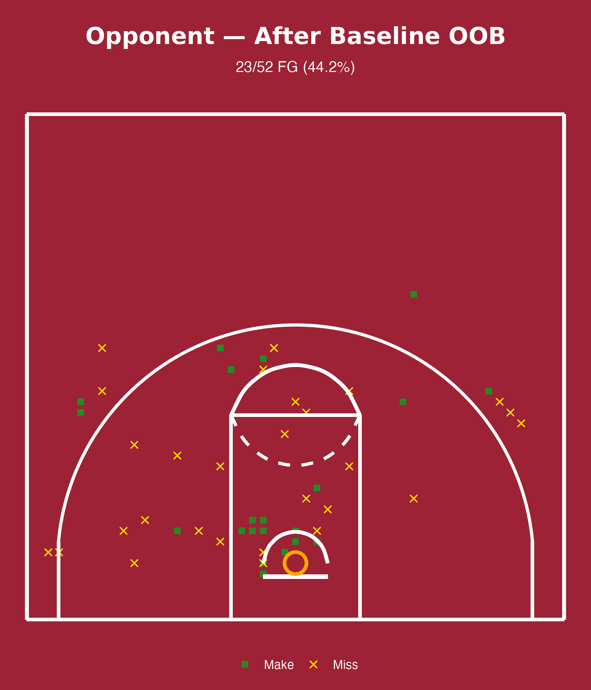

Shot-frequency and shooting-tendency visuals prepared for Temple Women's Basketball opponent scouting. Click any image to view it full size.
Opponent identity has been anonymized for privacy.

Shot frequency heatmap (excl. rim) for a opposing star player.

Shot frequency heatmap by lineup for opponent's starting lineup.

Opponent team-wide shot frequency heatmap (excl. rim).

Shot chart on baseline out-of-bounds plays).